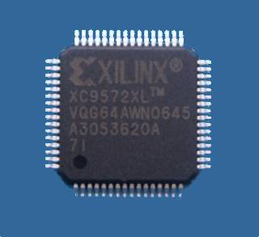
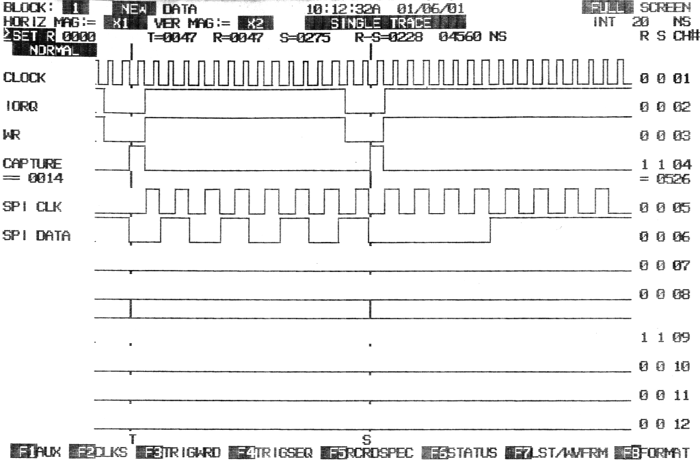
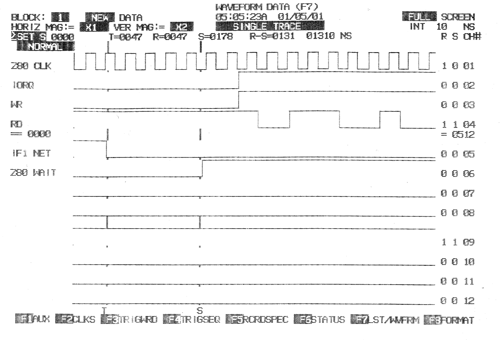
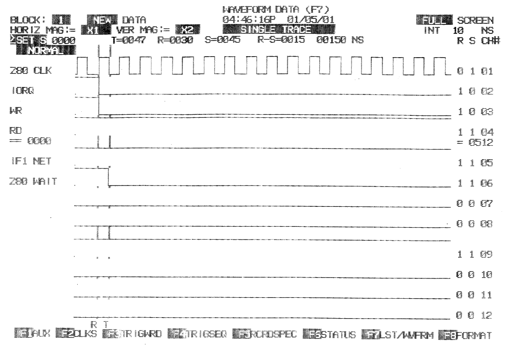
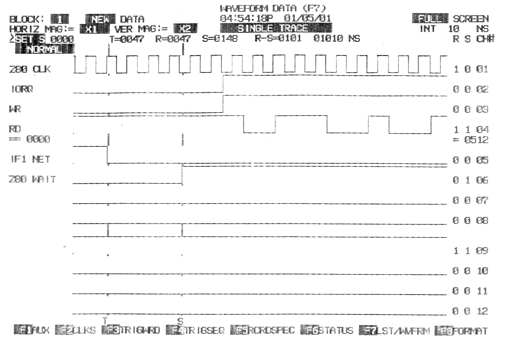

ZXMMC+ HardWare Page
The CPLD:
The CPLD used in this project is a 72 macrocell Xilinx XC9572XL in VQ64 package and can (should) be programmed when already soldered on the pcb. As the CPLD is powered at 3.3V, a suitable voltage regulator is installed on the ZXMMC+ board.
The source code for the CPLD can be downloaded HERE.

The RAM chip:
The 512KB ram chip installed in the ZXMMC+ interface, which is the key feature for ResiDOS compatibility, is ultra low-power: less than 10uA in stand-by mode. This is particularly important for the battery backup design. To prevent accidental data loss, the chip select is forced HIGH (inactive) when the +5V power line falls below 4V, thanks to a "floating ground" circuit on a pulldown resistor. This solution was borrowed from Sami Vehmaa's ZXCF project.
After ResiDOS and all the desired packages are installed into the RAM chip, they will be always available even after a power loss, as the memory keeps it's content thanks to a 3V "2330" (larger) or "2032" (smaller) button cell battery.
The FLASH ROM chip:
The on-board FLASH chip can be programmed with user firmware / data. An example routine for erasing/programming/comparing the FLASH memory content can be found in the software section, where a simple boot loader is also available which let the user jump into a particular ROM bank or into ResiDOS, provided that it was previously installed into nonvolatile RAM. When this bootloader is used, dip-switch should be set so that ROM is paged-in at power on. The bootloader must be programmed into ROM BANK 0. The first row of keys (10) will jump into one of the first 10 ROM banks (programmed into banks 1-11 as bank 0 is used by the bootloader itself), which may contain different custom ROMs. The second row of keys will select the first 10 RAM banks (ResiDOS startup bank is n. 0, so the first key will start ResiDOS). The last key (lower right, [SPACE]) will disable the memory paging and jump into the internal ZX-Spectrum ROM.
The FLASH ROM chip provides an excellent protection against accidental memory content overwrite by erratic program execution, as the FLASH PROGRAM mechanism can only be activated by a complex WR sequence (see the FLASH chip DataSheet).
As an additional protection, the CPLD will NOT enable the FLASH chip on WR cycles by default. In order to enable WR cycles on the FLASH chip, the software should first write an "unlock code" to the CPLD I/O port $1F. This is simply a byte with 'A' on the MSB nibble, while the LSB nibble is NOT AFFECTED (bits D3, D1 and D0 are used for other purposes, who are described later). Writing any other value to MSB nibble will deactivate WR cycles to the FLASH chip and WILL AFFECT ALL BITS in the register.
The SPI Port:
Data transfer to/from SD/MMC cards is handled in HARDWARE, by a SPI port which is built into the CPLD. A full byte can be read or written in just 16 Z80 T-states. This diagram shows the execution of two OUTI instructions (16T-states each) to SPI address ($3F); the first with data = $55 and the second with $0F. It can be noted how data flow is continuous between the two bytes, as the processor time for OUTI execution matches the 16T-states byte-cycle of the CPLD. To achieve this speed, the first SPI clock cycle begins while the processor is still in the middle of the WR cycle. The rising edge of the capture signal marks the databus sample by the CPLD, which happens on the falling edge of Z80 T3. The card acknowledges a new bit on the rising edge of it's clock. For this reason, the CPLD toggles the data output on the falling edge of Z80 clock (which, on PCB V1.1, equals to the rising edge of CPLD Clock).
The current version of cpld logic keeps the SPI CLOCK IDLE LOW, making the interface compatible with the ENC28J60 Ethernet controller by Microchip. An ethernet module may be designed and installed in place of the second SD-CARD slot.

Serial Port Hardware:
The 4-wires serial port electrical levels are guaranteed by a CD3232 I.C. which is very similar to the popular MAX232.
IF 1 Network Synchronization:
As on the original INTERFACE 1 hardware, writing a logic '0' to D5 of port $EF will put the processor in WAIT STATE as long as the NET line is active (+5V). This is used by network software to synchronize communication. Performing this operation when the NET is activated by us, will lead to an ENDLESS WAIT state.
DIAGRAM 1: On the original IF1, WAIT is asserted immediately after IORQ and WR goes LOW, so it halts the I/O write operation to port $EF itself:
DIAGRAM 2: On the original IF1, when the NET line goes inactive, the WAIT signal is deasserted within 4 or 5 T-states:

DIAGRAM 3: ZXMMC+: WAIT is asserted on the Clock's Falling Edge that follows IORQ+WR assertion:

DIAGRAM 4: ZXMMC+: WAIT is deasserted after FOUR Clock's Falling Edges, starting since NET becomes inactive:

Home Technical Description Software QuickStart Schematic PCB Contact the Author